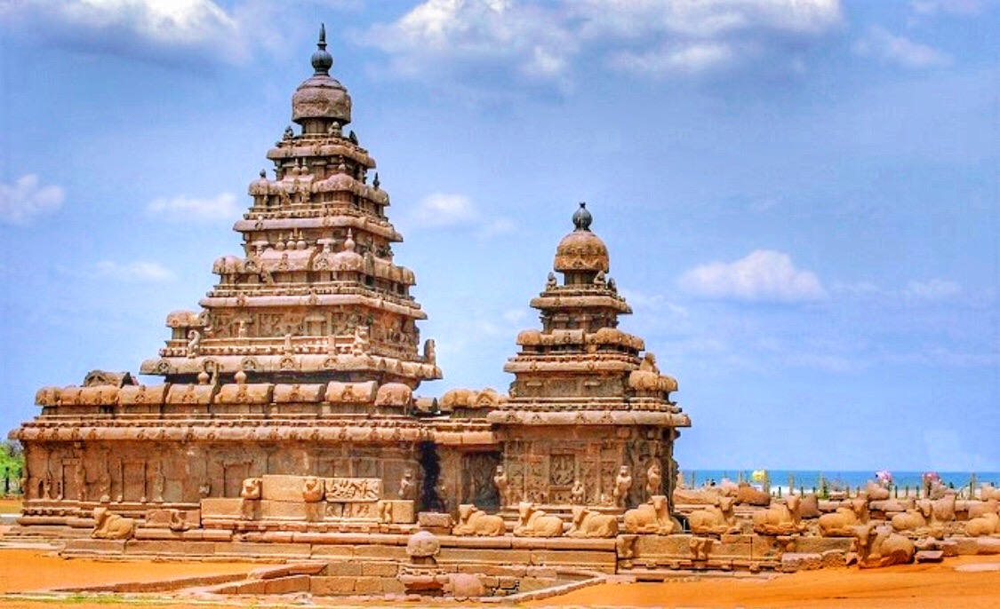
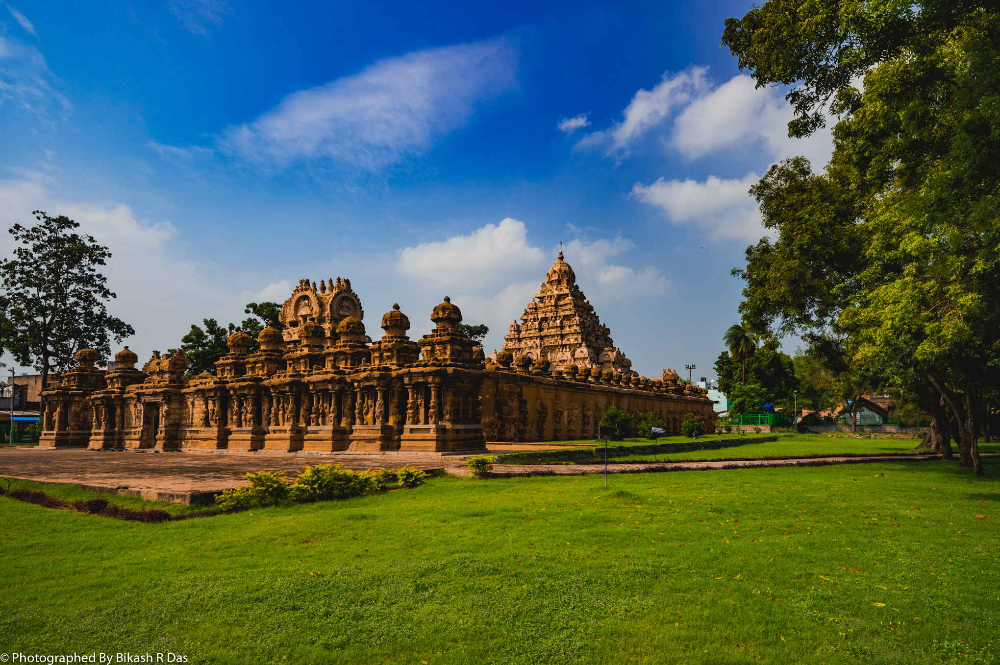
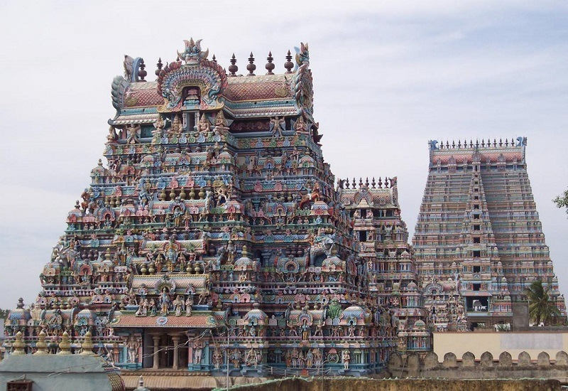
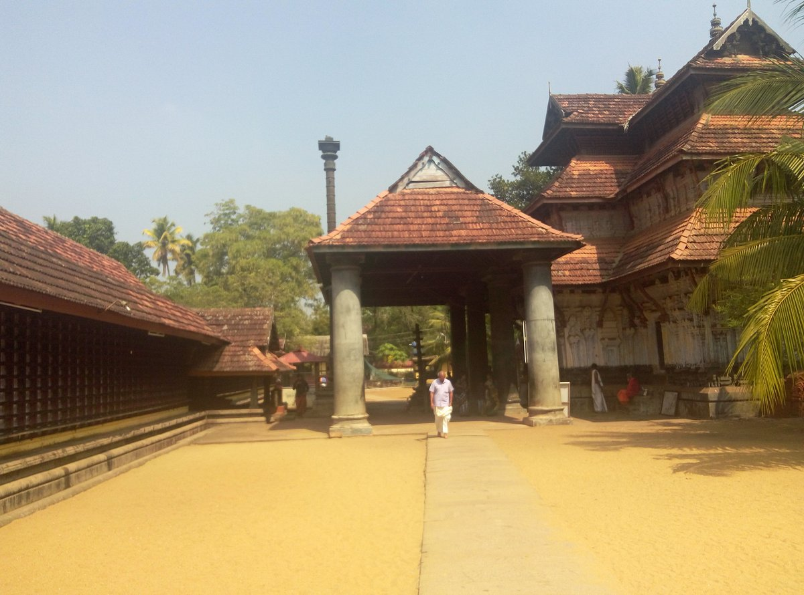

The Shore Temple and the Pancha Rathasof Mahabalipuram was also built by Pallava - Narasimhaverman II. It is the oldest structural temple in South India.

The Kailasanathar Temple at Kanchipuram was also built by Pallava - Narasimhaverman II also known as Rajasimha
 Meenakshi Temple at Madurai, Pandya architecture includes both rock-cut and structural temples like vimana, mandapa and sikahara.
Meenakshi Temple at Madurai, Pandya architecture includes both rock-cut and structural temples like vimana, mandapa and sikahara.

Aranganathar temple at Srirangam, Trichy built by Pandya architecture that includes both rock-cut and structural temples.
 The Brihadisvara Temple at Thanjavur is a Hindu temple dedicated to Shiva. It is one of the largest South Indian temples and an exemplary example of fully realized Tamil architecture.
The Brihadisvara Temple at Thanjavur is a Hindu temple dedicated to Shiva. It is one of the largest South Indian temples and an exemplary example of fully realized Tamil architecture.
 Gangaikondacholapuram temple is a living history of the Cholas in stone from the period of Rajendra-I and a beautiful gallery of Chola art and architecture.
Gangaikondacholapuram temple is a living history of the Cholas in stone from the period of Rajendra-I and a beautiful gallery of Chola art and architecture.
 Bhagavathi Amman Temple, Kanyakumari, Tamil Nadu was the Chera style of architecture is only one of its kind in Dravidian architecture, and their temples are mostly octagonal or rectangular in shape, built with sandstones or granite.
Bhagavathi Amman Temple, Kanyakumari, Tamil Nadu was the Chera style of architecture is only one of its kind in Dravidian architecture, and their temples are mostly octagonal or rectangular in shape, built with sandstones or granite.

Thiruvanchikulam Shiva Temple, ( Kerala-style architecture ), This temple falls under India’s archaeology, and it is one of the oldest Shiva temples in South India, built in the Thrissur district of Kodungallur.
 Sittannavasal is a Jain temple originating under Pandyan ruling which is home to some of the only Pandyan paintings left in the world. It is famous for its mural paintings covering the walls and roof of the cave.
Sittannavasal is a Jain temple originating under Pandyan ruling which is home to some of the only Pandyan paintings left in the world. It is famous for its mural paintings covering the walls and roof of the cave.
 Sculpture making: Chola period bronzes were created using the lost wax technique. The bronze statue of Nataraja, or dancing Siva, is a masterpiece.
Sculpture making: Chola period bronzes were created using the lost wax technique. The bronze statue of Nataraja, or dancing Siva, is a masterpiece.
 Chola paintings were predominantly executed on walls, murals, and wooden panels, often adorning the interiors of temples.The painting of Rajaraja Chola I, listening to his preceptor Karuvur Devar is a fine example.
Chola paintings were predominantly executed on walls, murals, and wooden panels, often adorning the interiors of temples.The painting of Rajaraja Chola I, listening to his preceptor Karuvur Devar is a fine example.